ActionImpulse
Применяет импульс к сущности.
Пробуждение
Пробуждает сущность или отправляет ее на отдых.
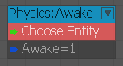
CameraProxy
Используется для создания прокси-сервера камеры объекта.
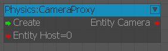
Входы
| Порт | Тип | Описание |
|---|---|---|
| Создать | Любой | Создает физический прокси-сервер камеры, если он не существует. |
| EntityHost | Любой | Синхронизирует вращение прокси с камерой текущего обзора. |
Выходы
| Порт | Тип | Описание |
|---|---|---|
| EntityCamera | Целое число | Получает прокси камеры |
CollisionListener
Используется для настройки прослушивателей физических столкновений.
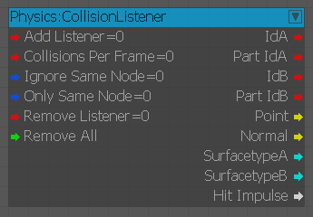
Входы
| Порт | Тип | Описание |
|---|---|---|
| AddListener | Любой | Добавляет прослушиватель столкновений |
| IgnoreSameNode | логическое значение | Подавляет события, если оба коллайдера зарегистрированы через один и тот же узел. |
| RemoveListener | Любой | Удаляет прослушиватель столкновений |
| Удалить все | Любой | Удаляет все |
Выходы
| Порт | Тип | Описание |
|---|---|---|
| IdA | Любой | ID первого столкнувшегося объекта |
| PartIdA | Целое число | Часть ID внутри первого сталкивающегося объекта. |
| IdB | Любой | ID второго сталкивающегося объекта |
| PartIdB | Целое число | Часть ID внутри второго сталкивающегося объекта. |
| Точка | Век3 | Местоположение точки столкновения |
| Нормальный | Век3 | Столкновение нормальное |
| SurfacetypeA | Строка | Тип поверхности первого сталкивающегося объекта |
| SurfacetypeB | Строка | Тип поверхности второго сталкивающегося объекта |
| HitImpulse | Плавать | Импульс столкновения по нормали |
Ограничение
Используется для создания физического ограничения.
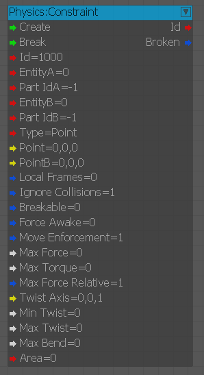
Входы
| Порт | Тип | Описание |
|---|---|---|
| Создать | Любой | Создает ограничение |
| Перерыв | Любой | Нарушает ограничение |
| идентификатор | Целое число | Ограничение ID |
| EntityA | Любой | Сущность-владелец ограничения |
| PartIdA | Целое число | Деталь ID для присоединения |
| EntityB | Любой | Объект-партнер по ограничениям |
| PartIdB | Целое число | Деталь ID для присоединения |
| Точка | Век3 | Точка соединения в мировом пространстве |
| IgnoreCollisions | логическое значение | Отключает столкновения между ограниченными объектами. |
| Ломкий | логическое значение | Разрыв, если достигнут предел силы |
| ForceAwake | логическое значение | Сделайте так, чтобы сущность Б всегда бодрствовала; восстанавливает предыдущие параметры сна |
| MaxForce | Плавать | Предел силы |
| MaxTorque | Плавать | Предел силы вращения (крутящего момента) |
| MaxForceRelative | Любой | Установите ограничения относительно массы объекта Б. |
| TwistAxis | логическое значение | Главная ось вращения в мировом пространстве |
| MinTwist | Плавать | Нижний предел вращения около TwistAxis |
| MaxTwist | Плавать | Верхний предел вращения около TwistAxis |
| MaxBend | Плавать | Максимальный изгиб TwistAxis |
Выходы
| Порт | Тип | Описание |
|---|---|---|
| идентификатор | Целое число | Ограничение ID |
| Сломанный | логическое значение | Срабатывает, когда ограничение нарушается |
Динамика
Динамическое физическое состояние объекта. См. помощники по наведению курсора мыши на вывод, чтобы получить справку по описанию вывода.
GetPhysId
Возвращает ID физического объекта, связанного с EntityId (-1, если нет).
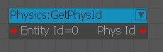
GetSkeleton
Возвращает временный идентификатор объекта, который можно использовать для доступа к физике скелета персонажа.
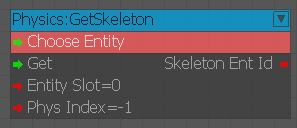
ObjTypeSelection
Позволяет указать тип выбранного объекта.
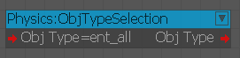
Параметры
ArticulatedBody
Используется для установки физических параметров шарнирного тела.
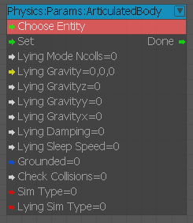
| Порт | Описание |
|---|---|
| Установить | Запускает узел |
| LyingModeNcolls | Количество контактов, запускающих «режим лежа» |
| LyingDamping | Демпфирование override |
| IsGrounded | Крепится ли ось тела к чему-либо или свободно |
| CheckCollisions | Работает только с bCollisionResp набор |
| SimType | Тип моделирования: 0 – «на основе суставов», 1 – «на основе тела»; быстрое движение автоматически включает режим суставов |
| LyingSimType | Тип моделирования override |
AutoDetachment
Используется для установки физических параметров автоотсоединения.
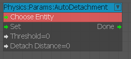
Плавучесть
Используется для установки физических параметров плавучести.
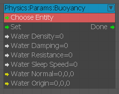
| Порт | Описание |
|---|---|
| WaterDensity | Переопределяет плотность воды из текущего объема воды для объекта; наборы для акваторий. |
| WaterDamping | Равномерное демпфирование при погружении будет масштабироваться с помощью погруженный в воду дробь. |
| WaterResistance | Среднее сопротивление воды; те же комментарии о воде и кватер применить. |
Ткань
Используется для установки физических параметров ткани.
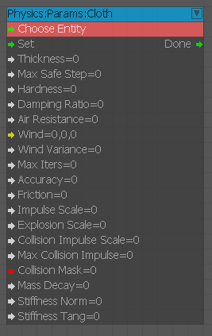
| Порт | Описание |
|---|---|
| Толщина | Толщина для столкновений |
| MaxSafeStep | Ограничение шага по времени |
| Твердость | Устойчивость к растяжению (для мягких тел <0 означает долю максимальной устойчивости) |
| DampingRatio | Демпфирование в направлении растяжения, в долях демпфирования 0-колебаний |
| AirResistance | Ветер в дополнение к физкультурному ветру |
| WindVariance | Отклонение ветра, в долях 1 (в настоящее время меняется 4 раза в секунду) |
| MaxIters | Настройка решателя (сложность = O(nMaxIters*numVertices)) |
| Точность | Точность решателя (скорость) |
| Трение | Преодолевает трение материала |
| ImpulseScale | Масштабируйте общие входящие импульсы |
| ExplosionScale | Масштабируйте импульсы от взрывов |
| CollisionImpulseScale | Не используется |
| MaxCollisionImpulse | Не используется |
| CollisionMask | Комбинация флагов ent_... |
| MassDecay | Уменьшает массу от прикрепленных точек к свободным концам; mass_free = mass_attached/(1+распад) (может повысить стабильность) |
| StiffnessNorm | Устойчивость к изгибу |
| StiffnessTang | Устойчивость к сдвигу |
CollisionClass
Используется для установки физических параметров для CollisionClass .
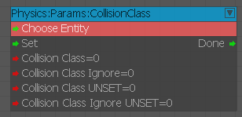
| Порт | Описание |
|---|---|
| CollisionClass | Устанавливает тип CollisionClass |
| CollisionClassIgnore | Устанавливает CollisionClass игнорирование |
| CollisionClassUNSET | Очищает тип CollisionClass |
| CollisionClassIgnoreUNSET | Очищает CollisionClass игнорировать |
Ограничение
Используется для установки физических параметров для ограничений.
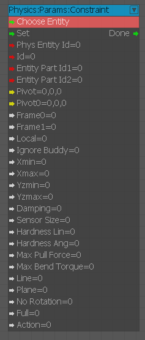
| Порт | Описание |
|---|---|
| PhysEntityId | Идентификатор физического объекта первого объекта (не совпадает с идентификатором объекта) |
| идентификатор | Если не установлено, будет назначено автоматически; возвращаемое значение Action(). Не обязательно должен быть уникальным — можно обновить несколько ограничений одним идентификатором; если не установлено, обновляет все ограничения |
| EntityPartId1 | Если не установлено, предполагается, что первая часть |
| EntityPartId2 | Если не установлено, предполагается, что первая часть |
| Хмин | Ограничения вращения вокруг ось х («поворот»); если xlimits[0]>=[1], ось х заблокирован |
| Xмакс | Ограничения вращения вокруг ось х («поворот»); если xlimits[0]>=[1], ось х заблокирован |
| Измин | Комбинированный да-ротация – «изгиб» ось х; yzlimits[0] игнорируется и принимается равным 0 во время моделирования. |
| Измакс | Комбинированный да-ротация – «изгиб» ось х; yzlimits[0] игнорируется и принимается равным 0 во время моделирования. |
| Демпфирование | Внутреннее демпфирование ограничений |
| SensorSize | Используется для выборки среды и повторного подключения ограничения, когда что-то ломается. |
| HardnessLin | Устанавливает, насколько быстро решатель пытается разрешить позиционный и вращательный дрейф. |
| HardnessAng | Устанавливает, насколько быстро решатель пытается разрешить позиционный и вращательный дрейф. |
| MaxPullForce | Пределы позиционной и вращательной силы |
| MaxBendTorque | Пределы позиционной и вращательной силы |
| Полный | Полностью заблокирован |
ConstraintRemove
Используется для установки физических параметров ткани.
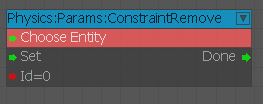
Флаги
Используется для установки физических параметров ткани.
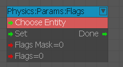
GroundPlane
Используется для установки физических параметров ткани.
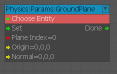
PartFlags
Используется для установки физических параметров ткани.
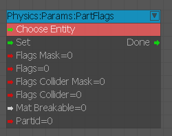
Частица
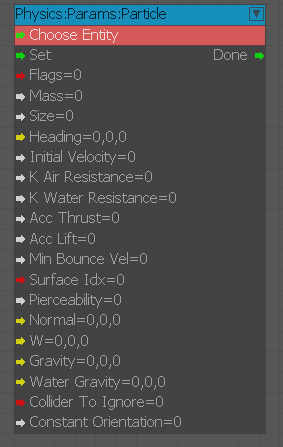
| Порт | Описание |
|---|---|
| Флаги | То же, что флаги сущностей |
| Масса и размер | Псевдо-радиус |
| Заголовок | Нормализованный вектор курса |
| InitialVelocity | Скорость по «курсу» |
| kAirResistance | Сопротивление воздуха коэффициент, Ф = кв |
| kWaterResistance | То же самое для воды |
| AccThrust | Ускорение по направлению движения |
| AccLift | Ускорение, которое поднимает частицу с текущей скоростью |
| MinBounceVel | Порог скорости для переключателя подпрыгивания->ползуна |
| SurfaceIdx | Угловая скорость |
| Пробиваемость | Пробиваемость для лучевых испытаний; пронзительные удары замедляют частицу, но не останавливают ее |
| Нормальный | Выравнивает это направление с нормалью поверхности при скольжении. |
PlayerDimensions
Используется для установки физических параметров ткани.
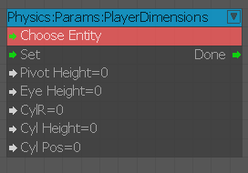
PlayerDynamics
Используется для установки физических параметров ткани.
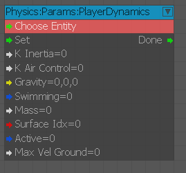
Веревка
Используется для установки физических параметров ткани.
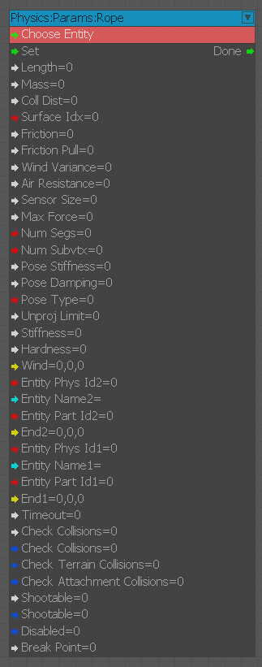
| Порт | Описание |
|---|---|
| Длина | Указывает «целевую» длину; 0 допускается для канатов с динамическим разделением |
| Масса | Толщина для столкновений |
| CollDist | Толщина для столкновений |
| SurfaceIdx | Используется для отчетов о столкновениях; трение игнорируется |
| Трение | Трение в свободном состоянии и боковое трение в напряженном состоянии. |
| FrictionPull | Трение в направлении тяги в напряженном состоянии |
| Ветер | Вектор ветра в дополнение к любому ветру окружающей среды |
| WindVariance | Отклонение (применяется только к локальным значениям) |
| AirResistance | Должно быть >0, чтобы на него воздействовал ветер. |
| SensorSize | Размер датчика, используемого для повторного присоединения веревки, если главный объект порвется. |
| MaxForce | Предел силы; при разрыве веревка отсоединится сама, если не установлено rope_no_tears |
| NumSegs | Количество сегментов, изменение приведет к сбросу позиций вершин. |
| NumSubvtx | Максимальное количество внутренних вершин на сегмент в режиме подразделения |
| PoseStiffness | Жесткость сохранения формы |
| PoseDamping | Демпфирование сил сохранения формы |
| PoseType | 0 – нет целевой позы (нет жесткости сохранения формы), |
| UnprojLimit | Предел непроецирования вращения на кадр (режим без разделения) |
| Жесткость | Устойчивость к растяжению (используется в решателе; однако это *не* пружина) |
| Твердость | Используется для решателя в напряженном состоянии с разделением на |
Моделирование
Используется для установки физических параметров ткани.
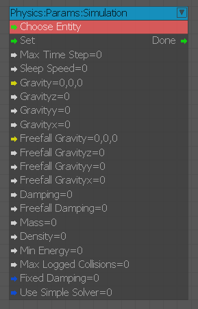
| Порт | Описание |
|---|---|
| MaxTimeStep | Максимальный временной шаг, который может принять объект (более крупные шаги будут разделены). |
| Демпфирование | Затухающая скорость = исходная скорость * (1 - затухание*интервал времени). |
| FreefallDamping | Демпфирование и гравитация используются при отсутствии столкновений. |
| Масса | Затухающая скорость = исходная скорость * (1 - затухание*интервал времени). |
| Плотность | Максимум EventPhysCollisions сообщается за кадр (поддерживается только твердыми телами/рэгдоллами/транспортными средствами). |
| MinEnergy | Минимальная кинетическая энергия, ниже которой сущность засыпает (деленная на массу). |
| MaxLoggedCollisions | Максимум EventPhysCollisions сообщается за кадр (поддерживается только твердыми телами/рэгдоллами/транспортными средствами). |
Транспортное средство
Используется для установки физических параметров транспортного средства.
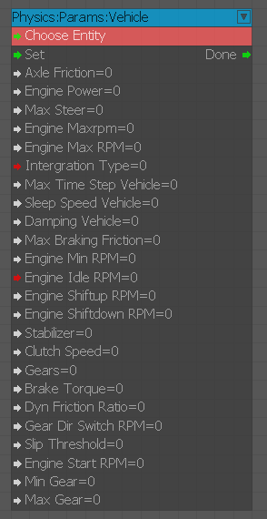
| Порт | Описание |
|---|---|
| AxleFriction | Момент трения на осях, разделенный на массу автомобиля |
| EnginePower | Мощность двигателя (около 10 000 – 100 000) |
| MaxSteer | Максимальный угол поворота |
| EngineMaxrpm | Крутящий момент двигателя снижается до 0 после достижения этой скорости вращения. |
| IntergrationType | Используется для подвесок; 0-явный Эйлер, 1-неявный Эйлер |
| MaxTimeStepVehicle | Максимальный шаг по времени, когда транспортное средство имеет только контакт с колесами |
| DampingVehicle | Демпфирование, когда автомобиль имеет только контакт с колесами |
| MaxBrakingFriction | Ограничивает трение шин при ручном тормозе |
| EngineMinRPM | Выключает сцепление при выходе за этот предел, при торможении двигателем. |
| EngineIdleRPM | RPM для состояния ожидания |
| EngineShiftupRPM | Порог RPM для автоматического переключения передач |
| EngineShiftdownRPM | RPM для состояния ожидания |
| Стабилизатор | Сила стабилизатора, как множитель для kStiffness соответствующих подвесок. |
| ClutchSpeed | Скорость включения/выключения сцепления |
| BrakeTorque | Крутящий момент, прилагаемый при торможении с помощью двигателя |
| DynFrictionRatio | Модификатор трения для скользящих колес. |
| GearDirSwitchRPM | RPM порог переключения передач назад и вперед |
| SlipThreshold | Порог боковой скорости для перевода колеса в режим пробуксовки |
| EngineStartRPM | Устанавливает это RPM при активации двигателя |
| MinGear | Дополнительный зажим индекса шестерни |
| MaxGear | Дополнительный зажим индекса шестерни |
Скорость
Используется для установки физических параметров скорости.
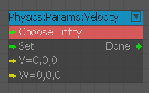
Колесо
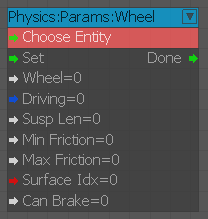
| Порт | Описание |
|---|---|
| Колесо | Колеса на одной оси выравнивают свои координаты (если лишь слегка смещены) |
| IsDriving | Включено, когда колесо движется |
| SuspLen | Полная длина подвески (расслабленная) |
| MaxFriction | Поверхностное трение обрезано до этого минимального-максимального диапазона. |
| MinFriction | |
| SurfaceIdx | Использует raycasts вместо цилиндров |
| CanBrake | Ручной тормоз включен |
PartIDConversion
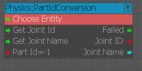
PhysicsEnable
Включает/выключает физику.
PhysicsSleepQuery
Узел, который возвращает спящее состояние физики данного объекта.
RayCast
Используется для выполнения raycast относительно объекта.
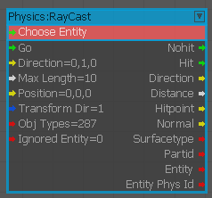
Входы
| Порт | Тип | Описание |
|---|---|---|
| Иди | Любой | Активирует узел |
| Направление | Век3 | Направление рейкаста |
| MaxLength | Плавать | Максимальная длина рейкаста |
| Позиция | Век3 | Начальная позиция луча относительно объекта |
| TransformDir | логическое значение | Преобразует направление по ориентации объекта |
Выходы
| Порт | Тип | Описание |
|---|---|---|
| NoHit | Любой | Срабатывает, если луч не затронул ни один объект |
| Хит | Любой | Срабатывает, если объект был поражен лучом |
| Направление | Век3 | Направление броска луча |
| Расстояние | Плавать | Расстояние до объекта поражения |
| HitPoint | Век3 | Позиция попадания |
| Нормальный | Век3 | Нормаль поверхности на уровне HitPoint |
| SurfaceType | Целое число | Индекс типа поверхности попадания на поверхность |
| Сущность | Любой | ID объекта, по которому был нанесен удар |
RayCastCamera
Выполните raycast относительно камеры.
SetParams
Устанавливает различные физические параметры, доступные сценариям.
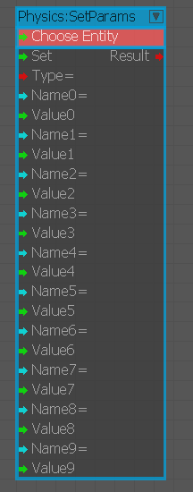